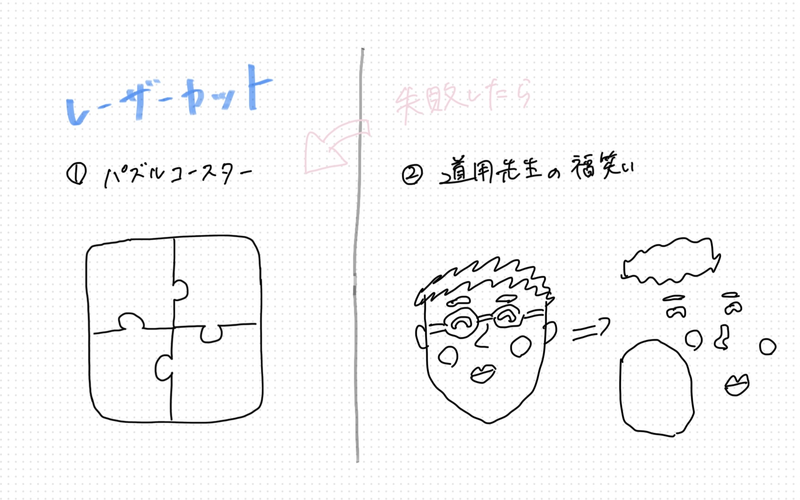
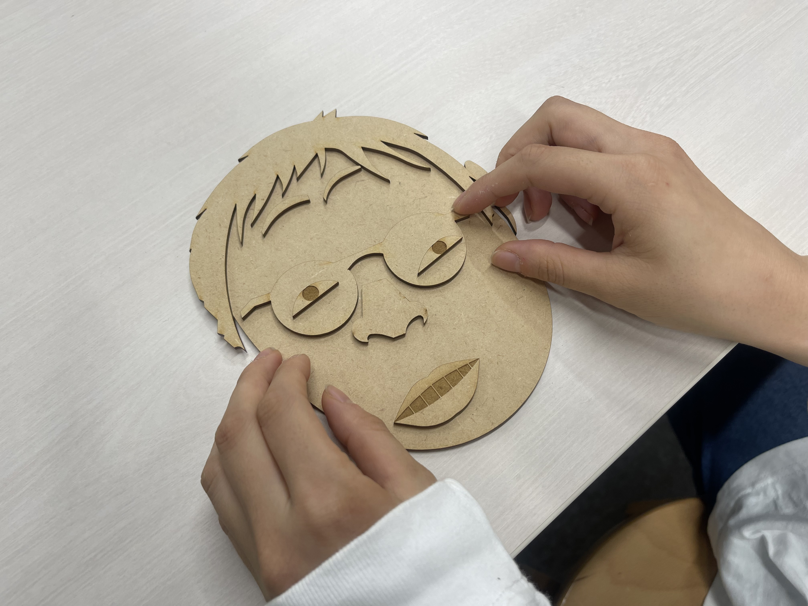
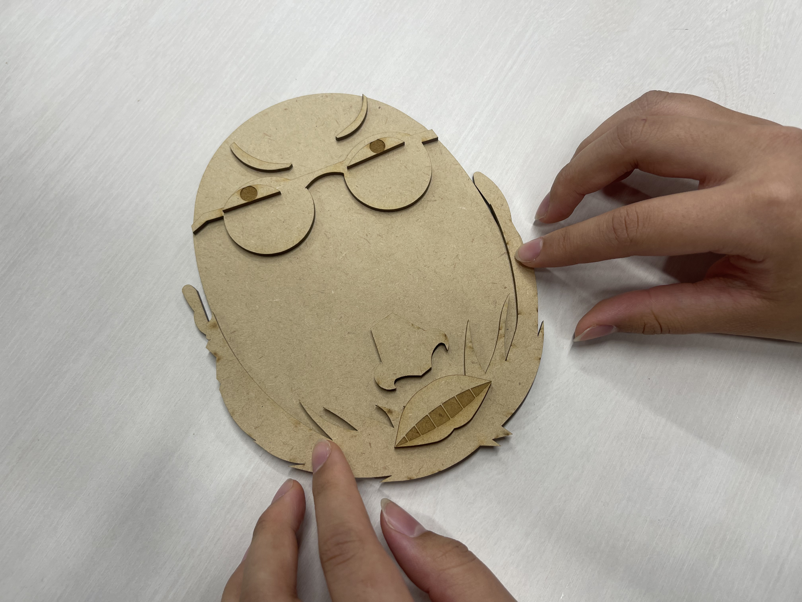

3. Fusion360での設計
次に、スケッチを元にFusion360で設計を行いました。ここではパーツの形や配置を写真を参考にしてより正確に作成していきました。


タイトルは「道用福笑い」です。道用先生に見えるように１個ずつパーツを似せて作るのを頑張りました！
最初はパズル型のコースターを作ろうとしていて、Fusion360でもう設計までしていたのですが、ふと福笑いを思いついて、みんながわかるように道用先生の顔にしたら面白いのではないかと思い、それがもし失敗したらコースターを引き続き作ろうと思っていました、、。なんとか成功してよかったです。
次に、スケッチを元にFusion360で設計を行いました。ここではパーツの形や配置を写真を参考にしてより正確に作成していきました。
レーザーカッターでカットした後のパーツと、木の板の抜け殻です。道用先生だけでなく、いろいろな顔を作って楽しめるのがポイントです。
 最初はどうなることかと思いましたが、かなり時間をかけて設計した甲斐あってうまくできました！